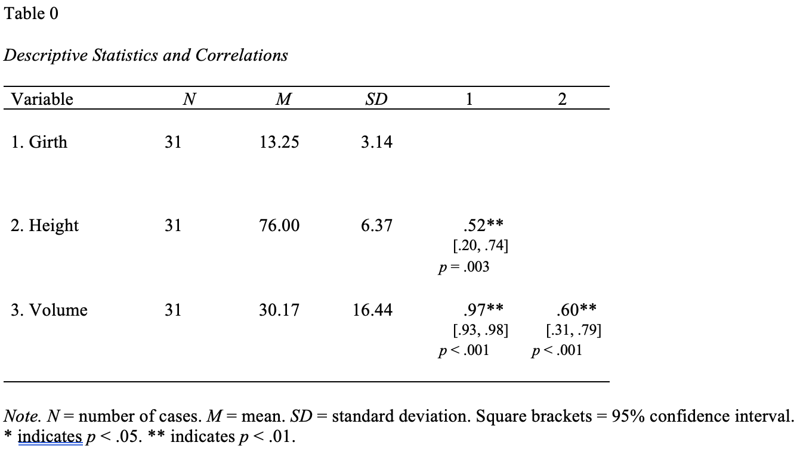

One of the most common, and yet painstaking, tasks in writing a manuscript is creating a table (correlation, regression, etc.).
Creating them by hand is not only time-consuming but also error-prone. Even when some softwares (SPSS) allow users to create tables, they are often not APA7 ready.
Today, I introduce a simple package called {apaTables} that will prepare an APA7 ready correlation table (the most commonly reported APA table) in 3 steps AND less than 5 minutes!
Note
This assumes that you have basic familiarity with R.
Step 1: Install {apaTables}
Do not install the package from CRAN, as one of the key features is not available there.
install.packages("remotes")
The following package(s) will be installed:
- remotes [2.5.0]
These packages will be installed into "~/work/follhim.github.io/follhim.github.io/renv/library/linux-ubuntu-noble/R-4.4/x86_64-pc-linux-gnu".
# Installing packages --------------------------------------------------------
- Installing remotes ... OK [linked from cache]
Successfully installed 1 package in 7.7 milliseconds.
remotes::install_github("dstanley4/apaTables")
Using github PAT from envvar GITHUB_TOKEN. Use `gitcreds::gitcreds_set()` and unset GITHUB_TOKEN in .Renviron (or elsewhere) if you want to use the more secure git credential store instead.
Skipping install of 'apaTables' from a github remote, the SHA1 (bd45cfd5) has not changed since last install.
Use `force = TRUE` to force installation
library(apaTables)
Step 2: Load the data
To support maximum reproducibility, I will use the built-in dataset in R called trees.
data(trees)
Tip
If you are using your own dataset, make sure to load it using read_sav() or read_csv().
Table 0
Descriptive Statistics and Correlations
Variable N M SD 1 2
1. Girth 31 13.25 3.14
2. Height 31 76.00 6.37 .52**
[.20, .74]
p = .003
3. Volume 31 30.17 16.44 .97** .60**
[.93, .98] [.31, .79]
p < .001 p < .001
Note. N = number of cases. M = mean. SD = standard deviation.
Values in square brackets indicate the 95% confidence interval.
* indicates p < .05. ** indicates p < .01.
This will create a correlation table in a Word document.

Warning
Note that apa.cor.tables only allows two output options (.doc OR .rtf). However, it is very easy to copy and paste a .doc file into a docx file.
Modify Output.
The full arguments are below.
apa.cor.table( trees,filename =NA, # (optional) a filename must end in .doc or .rtftable.number =0, # optional, you can add in Word.show.conf.interval =TRUE, # Optional, and most would make this FALSE.show.sig.stars =TRUE,show.pvalue =TRUE, # unfortunately, it will only show ** < .01, which is why you should keep this TRUE to add a third *** for < .001.landscape =TRUE)
Table 0
Descriptive Statistics and Correlations
Variable N M SD 1 2
1. Girth 31 13.25 3.14
2. Height 31 76.00 6.37 .52**
[.20, .74]
p = .003
3. Volume 31 30.17 16.44 .97** .60**
[.93, .98] [.31, .79]
p < .001 p < .001
Note. N = number of cases. M = mean. SD = standard deviation.
Values in square brackets indicate the 95% confidence interval.
* indicates p < .05. ** indicates p < .01.
Important
Unfortunately, it will only show * <.05 or ** < .01, which is why you should keep show.pvalue = TRUE to manually add a third *** for < .001.
All done!
Now you can pluck your APA correlation table into your manuscript in 5 minutes!
If you found this helpful please like the heart below.
Citations
citation()
To cite R in publications use:
R Core Team (2024). _R: A Language and Environment for Statistical
Computing_. R Foundation for Statistical Computing, Vienna, Austria.
<https://www.R-project.org/>.
A BibTeX entry for LaTeX users is
@Manual{,
title = {R: A Language and Environment for Statistical Computing},
author = {{R Core Team}},
organization = {R Foundation for Statistical Computing},
address = {Vienna, Austria},
year = {2024},
url = {https://www.R-project.org/},
}
We have invested a lot of time and effort in creating R, please cite it
when using it for data analysis. See also 'citation("pkgname")' for
citing R packages.
citation("apaTables")
To cite package 'apaTables' in publications use:
Stanley D (2023). _apaTables: Create American Psychological
Association (APA) Style Tables_. R package version 3.0.0, commit
bd45cfd51891138e805f0fc169c0978c4c6cdfce,
<https://github.com/dstanley4/apaTables>.
A BibTeX entry for LaTeX users is
@Manual{,
title = {apaTables: Create American Psychological Association (APA) Style Tables},
author = {David Stanley},
year = {2023},
note = {R package version 3.0.0, commit bd45cfd51891138e805f0fc169c0978c4c6cdfce},
url = {https://github.com/dstanley4/apaTables},
}
![]()